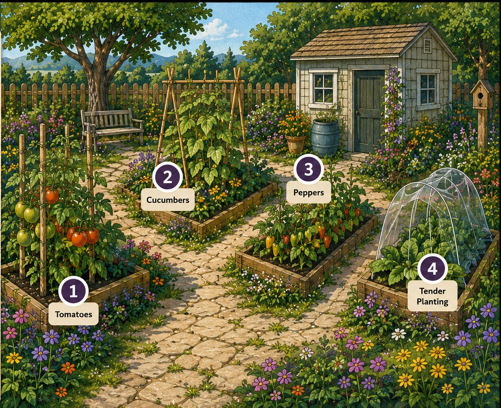
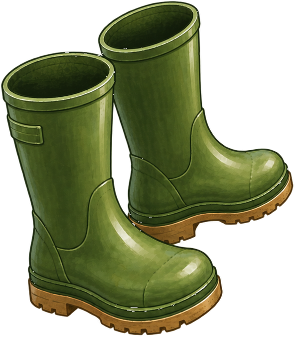

What is stressing this plant?Module 3 · Garden walk
LOOK + CONNECT
A GARDEN WALK
Something looks different in the garden.
Plants give us clues. Weather data can help us make sense of what we see.
At each stop, you will:
1👁
Look at the plant and notice what has changed.
2☀️
Check the recent weather clues.
3?
Weigh the evidence and choose the best-supported explanation.
GARDEN MAP
Walk through the garden.
Once you finish a stop, the next stop will become available.


Stop 1 is ready. Select the tomatoes to begin.
STOP 1 OF 4 · Tomatoes
Photo: Berit Dinsdale, Oregon State University
WEIGH THE EVIDENCE
Some tomato flowers have dried and dropped without developing fruit. Which explanation is best supported by the evidence provided?
STOP 2 OF 4 · Cucumber
Photo: Olga Seyfutdinova/stock.adobe.com · Adobe Stock 517376856
WEIGH THE EVIDENCE
Leaves droop during the hottest part of the afternoon but look less wilted when temperatures cool. Which explanation is best supported by that pattern?
STOP 3 OF 4 · Pepper
Photo: Berit Dinsdale, Oregon State University
WEIGH THE EVIDENCE
The pepper plant is wilting even though the garden has received frequent rain. Which explanation is best supported by the evidence?
STOP 4 OF 4 · Tender growth
Photo: Olga Seyfutdinova/stock.adobe.com · Adobe Stock 762546862
WEIGH THE EVIDENCE
New growth appears darkened, wilted, and damaged after a period of otherwise mild spring weather. Which explanation is best supported by the evidence?
GARDEN WALK COMPLETE
Conclusion
The plant is a clue—not the whole picture.
Temperature, precipitation, and extreme weather can stress plants in different ways. Looking at plant symptoms + weather conditions gives us more information than appearance alone.
Weather tells us what conditions the plant experienced. Climate helps us understand how those conditions may be changing over time.
You’ve practiced connecting plant responses with weather and climate conditions. Next, we’ll consider what gardeners can do to help plants cope with those conditions.